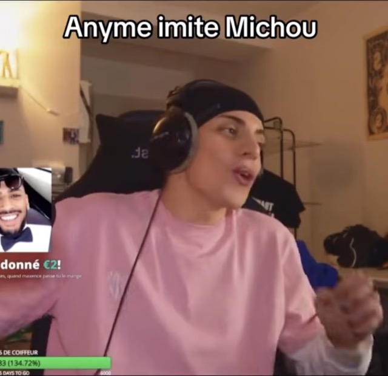

Espace de travail / AtelierTélécharger l’application
Studio de montage
Atelier de clips.
Transformez une vidéo en clips verticaux prêts à partager.
Aperçu
9:16
Vidéo du bas
Exemple de cadrage10 s
Mes clips
0 clipLes clips générés apparaîtront ici.